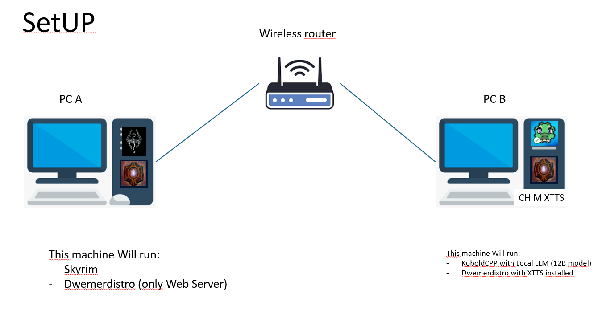
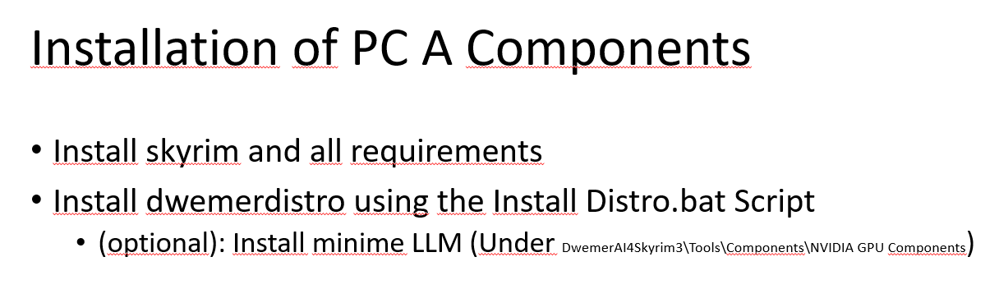
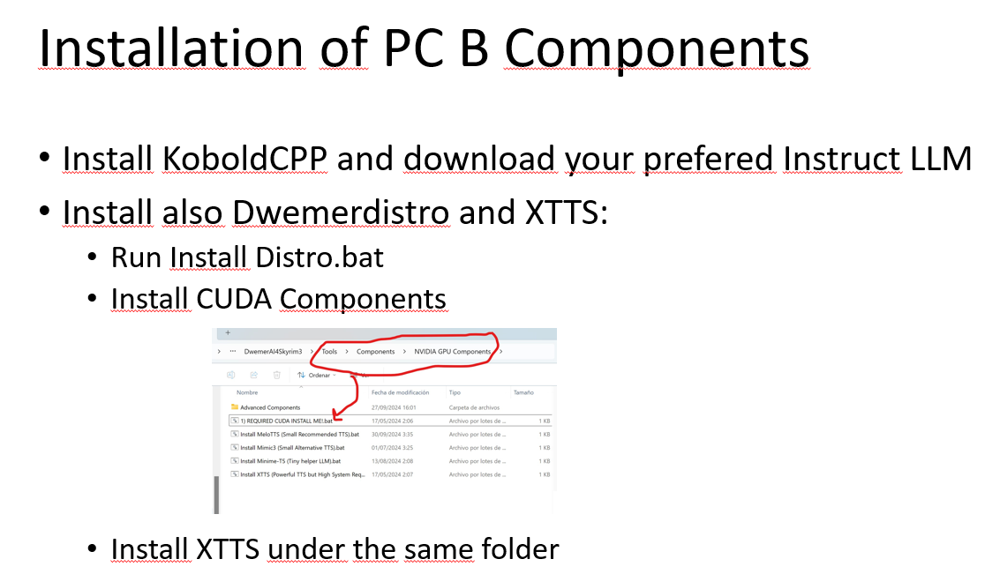
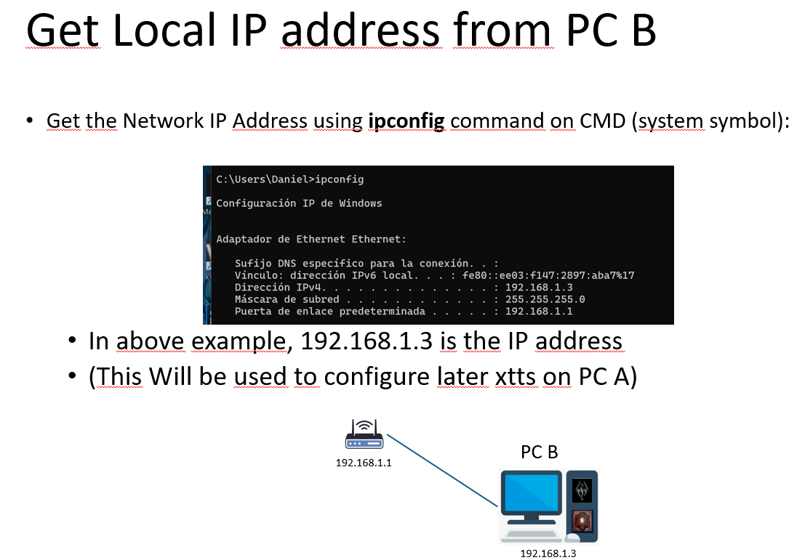
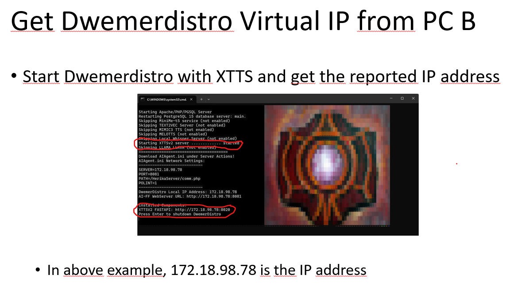
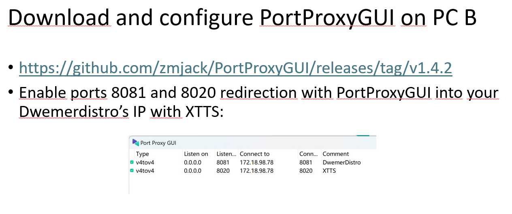
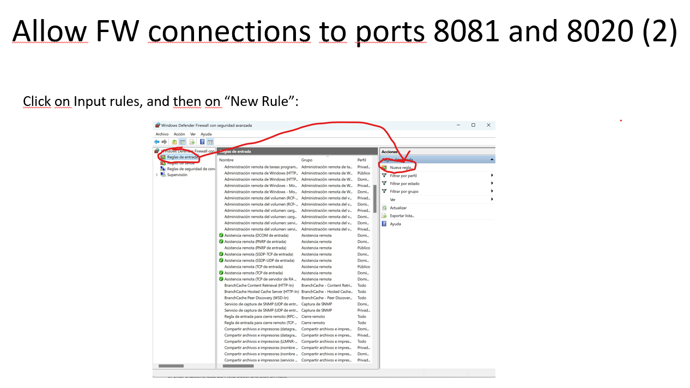
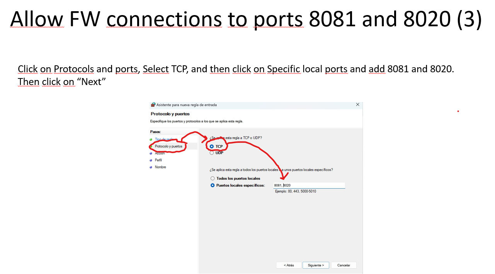
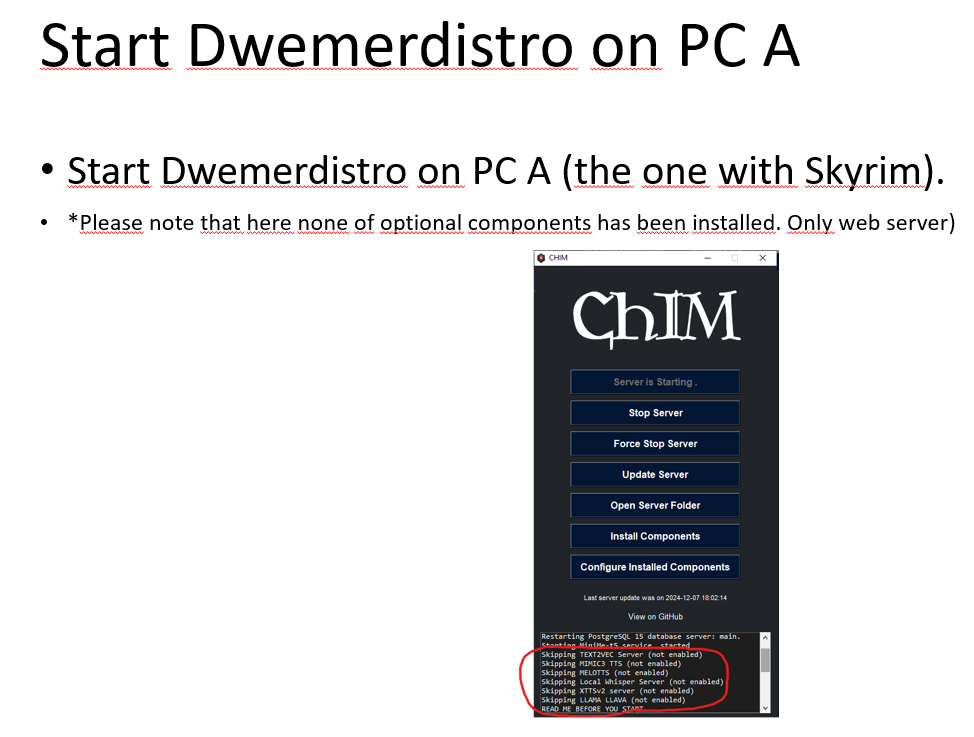
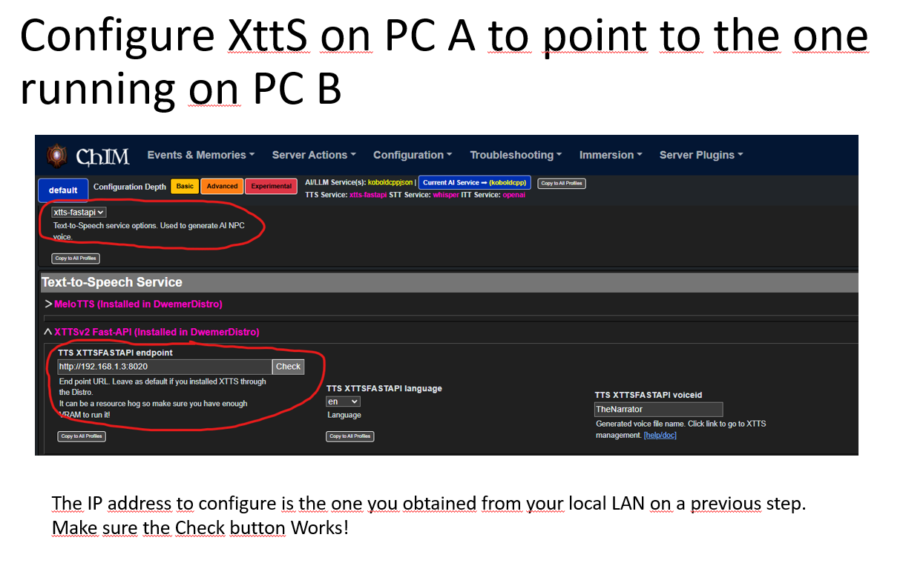

STOBE Remote Hosting Guide
This page covers the local network setup where Kenshi runs on one PC and StobeServer or voice services run on a second machine. The main thing this guide solves is getting the second machine's WSL-hosted STOBE services reachable from your gaming PC.
Remote Hosting Guide
Basic Setup Idea
PC A is the machine where you play Kenshi. PC B runs StobeServer, a local voice service, or both. Keep both machines on the same local network.

What Each PC Should Run
- PC A: Kenshi, RE_Kenshi, KenshiLib, and the STOBE game mod.
- PC B: DwemerDistro with StobeServer and any local AI or voice services you want to host remotely.


Get The Two Addresses You Need
You need two different addresses from the remote machine:
- The Windows LAN IP: this is the address the game PC will connect to.
- The WSL IP: this is the internal target that Windows will forward traffic into.

ipconfig on PC B and note its IPv4 LAN address.
You can also fetch the current WSL address directly with:
wsl hostname -IIf your second-PC setup suddenly stops working later, check this first. WSL IPs can change after restarts.
Forward The WSL Services Through Windows
This is the key fix from the old wiki. If trying to reach WSL_IP:8020 directly from the gaming PC keeps failing, do not keep aiming the game PC at the raw WSL address.
Forward those ports through the Windows host machine instead.
Forward the ports you actually use:
- 8083: StobeServer
- Your TTS connector port: for example 8020 for XTTS, 8021 for OmniVoice, or the port shown by your selected voice service.
You can create the rules in an elevated Command Prompt:
netsh interface portproxy add v4tov4 listenport=8083 listenaddress=0.0.0.0 connectport=8083 connectaddress=<WSL_IP>
netsh interface portproxy add v4tov4 listenport=<TTS_PORT> listenaddress=0.0.0.0 connectport=<TTS_PORT> connectaddress=<WSL_IP>If you prefer a visual tool, you can use PortProxyGUI:

Open The Windows Firewall Ports
Windows Firewall must allow the same ports. The connection will not work if those ports are blocked.
- Create an inbound rule for TCP.
- Allow the connection.
- Add local port
8083and the port used by your selected local voice service. - Apply it to Domain, Private, and Public if needed for your machine.


Point STOBE On PC A At The Remote Machine
Once PC B is forwarding and accepting traffic, the gaming PC should use the Windows LAN IP of PC B, not the raw WSL address.
- For StobeServer: set
ServerHostinStobeCustom.inito the LAN IP of PC B and keepServerPort=8083. - For TTS: use the PC B LAN IP and matching service port inside the STOBE TTS connector.


http://192.168.1.3:8020.
In short, use REMOTE_MACHINE_IP:8083 for StobeServer and the matching port for your selected voice service.
Quick Troubleshooting Notes
If it still does not work, go through these in order:
- Make sure the service actually works locally on PC B first.
- Confirm the PC B LAN IP with
ipconfig. - Confirm the current WSL IP again with
wsl hostname -I. - Make sure your port-proxy rules still point at the current WSL IP.
- Make sure Windows Firewall allows inbound TCP 8083 and your selected voice-service port.
- On PC A, use the remote machine IP, not the WSL IP, in the endpoint fields.
Original screenshot walkthrough on the old wiki was credited there to hey_daniel.